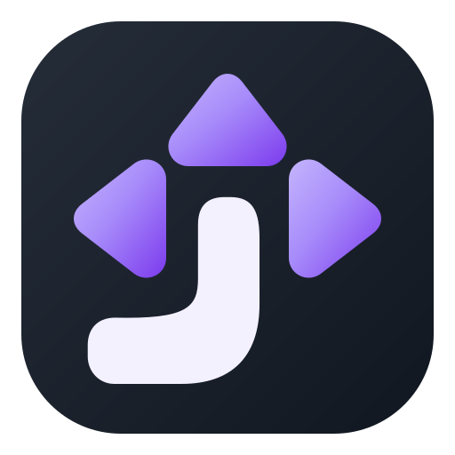
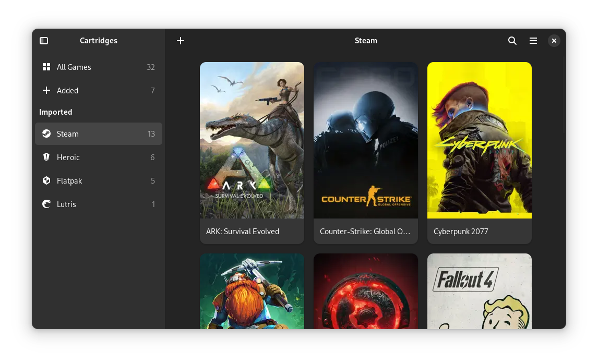
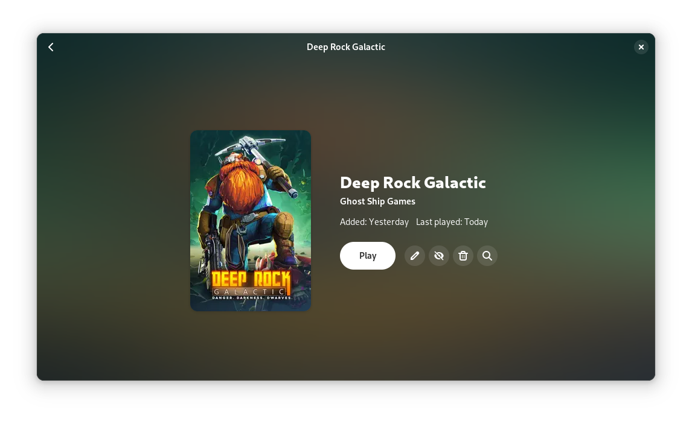
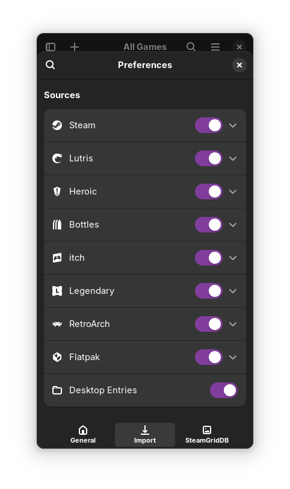

Tudo junto
Jogos instalados, launchers, emuladores e apps Android via Waydroid aparecem na mesma coleção, com capas, detalhes e capturas.

JolvenUma interface de jogos gamepad-first para Linux. Lance sua biblioteca inteira de um só lugar — use o Jolven no desktop ou inicie direto em uma sessão dedicada de jogos.

O Jolven reúne jogos de diferentes lugares em uma única biblioteca estilo console — sem pular entre launchers no sofá.
Jogos instalados, launchers, emuladores e apps Android via Waydroid aparecem na mesma coleção, com capas, detalhes e capturas.
Retome partidas, acompanhe tempo de jogo e sessões, e ache o próximo jogo sem cavar menus.
Ajuste resolução, limite de quadros e opções de execução para cada título — uma vez, depois é só jogar.
Você só quer jogar. O Jolven cuida da prateleira: busca capas, detalhes, capturas e papéis de parede em quatro fontes — e se uma não conhecer seu jogo, ele tenta a próxima sozinho.
Arte automática do SteamGridDB, com capas animadas que dão vida à prateleira. Não gostou? Escolha outra com um clique no seletor visual.
SteamGridDBSinopse, gêneros, número de jogadores, co-op, faixa etária e data de lançamento — aquela dúvida de “o que vamos jogar hoje?” some em segundos.
TheGamesDBFotos reais do jogo em alta definição como fundo da biblioteca. Antes mesmo de apertar Play, você já está dentro do jogo.
IGDBFundos automáticos ou escolhidos a dedo no Wallhaven, com filtros por categoria, cor e clima. Sua sessão, suas regras — até no visual.
WallhavenBasta adicionar suas chaves gratuitas nas Preferências uma única vez. Sem chaves, o Jolven funciona — com elas, ele brilha.
Suas fitas de LED viram parte do jogo: acendem no roxo do Jolven ao abrir o app, vestem a cor da capa quando a partida começa e voltam a como estavam quando você sai — mesmo que estivessem apagadas.
Toda tela é navegável com gamepad: explore a biblioteca, abra detalhes, mude ajustes e desligue a máquina — do sofá.
Direcional e analógicos movem, sul confirma, leste volta. Hotplug funciona.
Teclado virtual, ações grandes e um menu global com biblioteca, energia e sessão.
Mouse e teclado funcionam em tudo. O controle é uma opção — nunca obrigação.
Cada jogo lembra do seu jeito favorito de rodar — e o Jolven lembra quanto você já viveu nele.
Resolução, limite de quadros e opções de execução guardados por título. Ajustou uma vez, apertou Play para sempre.
Horas jogadas e sessões contadas sozinhas. Descubra seus favoritos de verdade — e retome de onde parou.
GameMode, MangoHud e Gamescope com interruptores simples, por jogo ou globais. Desempenho de console, sem decorar comandos.

Mesma biblioteca, mesmos ajustes — escolha a experiência do momento.
Use o Jolven como um app normal dentro do GNOME, KDE ou outro desktop Linux.
Inicie direto no Jolven pelo display manager para uma experiência temporária estilo console — sem carregar o desktop.
Instale o Jolven na sua distribuição Linux atual.
Ative a Jolven Session para a tela de login (opcional).
Pegue o controle. Sair da sessão volta ao display manager.
O Jolven não substitui sua distribuição. Mantenha Fedora, Ubuntu, Arch — o Linux que você já usa — e transforme o PC em console quando quiser. O Jolven complementa seu Linux; nunca compete com ele.

Jolven é software livre sob GPL-3.0 — um fork independente originalmente baseado no Cartridges. Extensível, transparente e construído em aberto com a comunidade Linux.
No Fedora, um único comando baixa e instala o Jolven no seu usuário.
curl -fsSL https://raw.githubusercontent.com/zonaro/jolven/main/install.sh | bash
O instalador baixa o binário oficial, cuida das dependências e instala tudo no seu usuário. Depois, abra o Jolven pelo menu de aplicativos.
Não. O Jolven roda sobre sua instalação Linux atual — Fedora, Ubuntu, Arch, a que você usar. É uma interface de jogos e uma sessão dedicada opcional, não um sistema operacional.
Não. O Jolven importa de Steam, Heroic, Lutris, Bottles, Waydroid, Flatpak, entradas desktop, emuladores e jogos manuais. Use qualquer combinação — ou nenhuma.
Sim. O Jolven funciona como aplicativo desktop normal dentro do GNOME, KDE ou outro ambiente gráfico.
Sim. A Jolven Session dedicada é opcional. Ao sair dela você volta ao display manager, com seu desktop intacto.
Não. Na primeira execução, o Jolven copia sua biblioteca, capas, ajustes e metadados para as próprias pastas. Seus dados originais nunca são apagados.
O app mira desktops Linux. A instalação da Jolven Session dedicada está preparada atualmente para Fedora.
Instale o Jolven na sua distribuição Linux atual e jogue.
Get Jolven